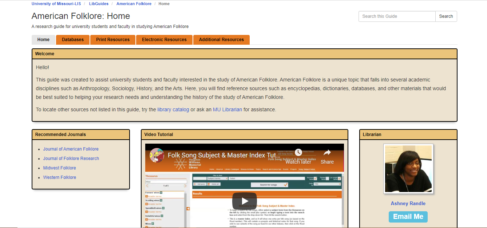

American Folklore LibGuide
For this assignment, I decided to compile print and electronic resources that would be useful to university students and faculty in studying American Folklore. I learned how to find relevant information for a specific audience, and how a LibGuide can be utilized as an instructional tool. Not all databases or online catalogs are the exact same, so creating videos explaining how to use an uncommon resource to patrons helps teach users how to find their desired information and improve information literacy skills. To view LibGuide click image below.
